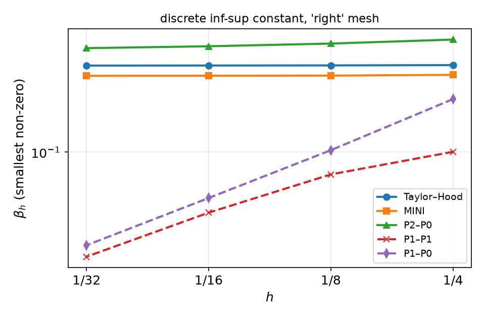
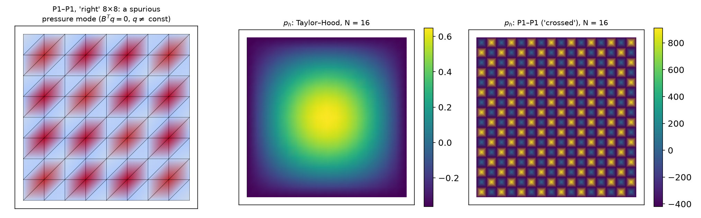
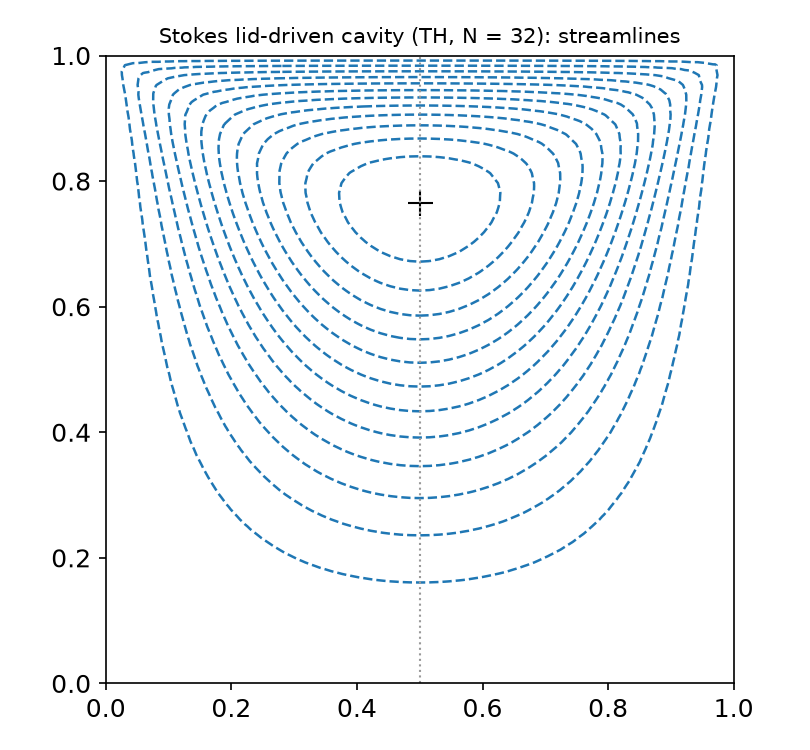

AI-based Materials and Process Simulation I
Week 11 — Stokes Flow: Mixed Problems · Inf-Sup · Brezzi · Taylor–Hood, MINI and Unstable Pairs
Process Systems Laboratory
Department of Chemical and Biomolecular Engineering, SeoulTech
Today
| Part | Topic | Time |
|---|---|---|
| Quiz | Week 10 (θ-method, amplification factor, explicit limit, temporal floor, u_n = uh) |
10 min |
| A | Theory — Stokes as a saddle-point problem, inf-sup, Brezzi’s theorem, discrete inf-sup, Fortin, error estimates, pressure robustness | 55 min |
| B | Mixed spaces in DOLFINx 0.11 — vector and mixed elements, boundary conditions on sub-spaces, the pressure constant, MMS | 40 min |
| C | Element pairs in practice — measured \beta_h, spurious pressure modes, rates for Taylor–Hood, MINI, P2–P0, P1–P1 | 30 min |
| D | LLM pitfalls with mixed problems · HW10 | 15 min |
Lab notebook: W11_lab.ipynb · Homework: W11_HW10.ipynb (due before Week 12)
Where we are
| Weeks | Problem | Existence | Discretisation |
|---|---|---|---|
| 1–7 | elliptic, scalar | Lax–Milgram (coercive) | any conforming V_h works (Céa) |
| 8–9 | nonlinear | Newton = a sequence of linear problems | same |
| 10 | parabolic | energy estimates | θ-method + elliptic solves |
| 11 | Stokes: velocity + pressure | not coercive — Brezzi | not every pair (V_h,Q_h) works |
Slow viscous flow: polymer melts, microfluidics, creeping flow in porous media, the inner loop of every Navier–Stokes solver (Weeks 14–15). The pressure is not a material property here — it is the Lagrange multiplier of incompressibility.
Part A — Theory
§A1 The Stokes problem and its weak form
-\mu\Delta\mathbf u+\nabla p=\mathbf f,\qquad\nabla\cdot\mathbf u=0\quad\text{in }\Omega,\qquad\mathbf u=\mathbf g\ \text{on }\partial\Omega,\qquad\int_\Omega p\,dx=0 .
(\nabla\cdot\mathbf u=0 ⇒ 2\nabla\cdot\varepsilon(\mathbf u)=\Delta\mathbf u; the symmetric-gradient form 2\mu\,\varepsilon(\mathbf u):\varepsilon(\mathbf v) matters for traction conditions.)
V=H^1_0(\Omega)^d (after lifting \mathbf g), Q=L^2_0(\Omega)=\{q\in L^2:\int q=0\}. Find (\mathbf u,p)\in V\times Q: a(\mathbf u,\mathbf v)+b(\mathbf v,p)=(\mathbf f,\mathbf v)\quad\forall\mathbf v\in V,\qquad b(\mathbf u,q)=0\quad\forall q\in Q, a(\mathbf u,\mathbf v)=\mu\int_\Omega\nabla\mathbf u:\nabla\mathbf v\,dx,\qquad b(\mathbf v,q)=-\int_\Omega q\,\nabla\cdot\mathbf v\,dx .
- Pressure only up to a constant with Dirichlet data everywhere: b(\mathbf v,1)=-\int_{\partial\Omega}\mathbf v\cdot\mathbf n=0. Hence L^2_0.
- Compatibility: \int_{\partial\Omega}\mathbf g\cdot\mathbf n\,ds=0 — what flows in must flow out.
§A2 Why Lax–Milgram fails
The combined form c((\mathbf u,p),(\mathbf v,q))=a(\mathbf u,\mathbf v)+b(\mathbf v,p)+b(\mathbf u,q) on X=V\times Q:
c((\mathbf 0,p),(\mathbf 0,p))=0\quad\text{for every }p .
Not coercive — and not an accident: the discrete matrix is a saddle point \begin{pmatrix}A&B^\top\\B&0\end{pmatrix}\begin{pmatrix}U\\P\end{pmatrix}=\begin{pmatrix}F\\0\end{pmatrix},\qquad A\ \text{SPD}, symmetric but indefinite (n_u positive, n_p negative eigenvalues). Invertible iff A is invertible on \ker B and B^\top is injective (B has full row rank).
The pressure appears only through B^\top P: if B^\top q=0 for some q\ne0, that q can be added to P without changing anything — a spurious pressure mode. In infinite dimensions “injective” has to be quantitative: the inf-sup condition.
§A3 The inf-sup condition and Brezzi’s theorem
Definition — inf-sup (LBB) condition
\inf_{0\ne q\in Q}\ \sup_{0\ne\mathbf v\in V}\ \frac{b(\mathbf v,q)}{\|\mathbf v\|_V\,\|q\|_Q}\ \ge\ \beta>0 . Equivalently: \|B^*q\|_{V'}\ge\beta\|q\|_Q — every pressure is “seen” by some velocity, uniformly.
Theorem (Brezzi 1974)
Let a be continuous (M) and coercive on Z=\ker B=\{\mathbf v:b(\mathbf v,q)=0\ \forall q\} (\alpha), and b continuous and inf-sup (\beta). Then for all F\in V', G\in Q' there is exactly one (\mathbf u,p) with a(\mathbf u,\mathbf v)+b(\mathbf v,p)=F(\mathbf v), b(\mathbf u,q)=G(q), and \|\mathbf u\|_V\le\tfrac1\alpha\|F\|+\tfrac{2M}{\alpha\beta}\|G\|,\qquad\|p\|_Q\le\tfrac{2M}{\alpha\beta}\|F\|+\tfrac{2M^2}{\alpha\beta^2}\|G\| .
Stokes: a is coercive on all of V (Poincaré; Korn for \varepsilon:\varepsilon), and \nabla\cdot:H^1_0(\Omega)^d\to L^2_0(\Omega) is onto (Nečas / Bogovskiĭ) ⇒ inf-sup holds ⇒ well-posed. Proof idea: inf-sup ⇒ lift G to \mathbf u_G; Lax–Milgram on Z; recover p from F-a(\mathbf u,\cdot)\in Z^0=\operatorname{Im}B^*.
§A4 The discrete inf-sup condition
Galerkin with V_h\subset V, Q_h\subset Q. Coercivity on Z_h is free (a is coercive on all of V). The one thing to check:
\beta_h:=\inf_{q\in Q_h}\sup_{\mathbf v\in V_h}\frac{b(\mathbf v,q)}{\|\mathbf v\|_V\|q\|_Q}\ \ge\ \beta_0>0\qquad\text{independent of }h .
Computable: with A the H^1 (vector Laplacian) matrix on V_h and M_p the pressure mass matrix, \beta_h^2=\lambda_{\min}\bigl(BA^{-1}B^\top,\ M_p\bigr)\quad(\text{on }Q_h\cap L^2_0). Zero eigenvalues beyond the constant = spurious modes; a smallest non-zero eigenvalue that decays with h = a pair that is not uniformly stable. We compute it in Part C for five pairs.
Counting gives a quick warning: \dim Q_h must not exceed what \nabla\cdot V_h can “see”. P1–P0 on N\times N (right): 2(N-1)^2 interior velocity DOFs, 2N^2-1 pressure constraints — more constraints than unknowns ⇒ locking (\mathbf u_h=0 is forced in large parts) and many spurious modes.
§A5 Fortin’s criterion
Lemma (Fortin)
Suppose continuous inf-sup (\beta) and an operator \Pi_h:V\to V_h with b(\mathbf v-\Pi_h\mathbf v,q_h)=0\ \ \forall q_h\in Q_h,\qquad\|\Pi_h\mathbf v\|_V\le C_\Pi\|\mathbf v\|_V . Then the discrete inf-sup holds with \beta_h\ge\beta/C_\Pi.
\sup_{\mathbf v_h}\frac{b(\mathbf v_h,q_h)}{\|\mathbf v_h\|}\ \ge\ \sup_{\mathbf v}\frac{b(\Pi_h\mathbf v,q_h)}{\|\Pi_h\mathbf v\|}=\sup_{\mathbf v}\frac{b(\mathbf v,q_h)}{\|\Pi_h\mathbf v\|}\ \ge\ \frac1{C_\Pi}\sup_{\mathbf v}\frac{b(\mathbf v,q_h)}{\|\mathbf v\|}\ \ge\ \frac{\beta}{C_\Pi}\|q_h\|.
MINI =(P1\oplus B_3)^2/P1: take a stable interpolant (Clément) \Pi_1, then correct with a bubble \mathbf b_K on each cell so that \int_K(\mathbf v-\Pi_h\mathbf v)\cdot\nabla q_h=0 (\nabla q_h is constant on K, and the bubble vanishes on \partial K — integrate by parts). One bubble per cell and component is exactly enough: the minimal enrichment. Taylor–Hood P2^2/P1: the edge midpoints play the bubbles’ role (Verfürth, Stenberg).
§A6 Error estimates and pressure robustness
Theorem (quasi-optimality for mixed methods)
With uniform \beta_h\ge\beta_0: \|\mathbf u-\mathbf u_h\|_1+\|p-p_h\|_0\le C(\beta_0)\Bigl(\inf_{\mathbf v_h}\|\mathbf u-\mathbf v_h\|_1+\inf_{q_h}\|p-q_h\|_0\Bigr).
| pair | \|\mathbf u-\mathbf u_h\|_1 | \|p-p_h\|_0 | \|\mathbf u-\mathbf u_h\|_0 (Aubin–Nitsche) |
|---|---|---|---|
| Taylor–Hood P2^2/P1 | h^2 | h^2 | h^3 |
| MINI (P1\oplus B_3)^2/P1 | h | h (often h^{3/2} observed) | h^2 |
| P2–P0 | h (limited by P0) | h | h^2 |
Pressure robustness. Scaled honestly the velocity bound reads \|\nabla(\mathbf u-\mathbf u_h)\|\le C\inf\|\nabla(\mathbf u-\mathbf v_h)\|+\frac{C}{\mu}\inf\|p-q_h\|: for \mathbf f=\nabla\phi the exact \mathbf u=0, but Taylor–Hood’s \mathbf u_h\ne0 because \nabla\cdot\mathbf u_h=0 holds only weakly (against Q_h). Measured in Part C: \|\mathbf u_h\|\propto1/\mu.
Part B — Mixed Spaces in DOLFINx 0.11
§B1 Vector and mixed elements
import basix.ufl
P2v = basix.ufl.element("Lagrange", msh.basix_cell(), 2, shape=(2,)) # vector P2: interleaved (u_x, u_y) per node
P1 = basix.ufl.element("Lagrange", msh.basix_cell(), 1)
W = fem.functionspace(msh, basix.ufl.mixed_element([P2v, P1])) # Taylor-Hood
# MINI: enrich P1 with the cubic bubble, then make it a vector element
E = basix.ufl.enriched_element([P1, basix.ufl.element("Bubble", msh.basix_cell(), 3)])
Wm = fem.functionspace(msh, basix.ufl.mixed_element([basix.ufl.blocked_element(E, shape=(2,)), P1]))
(u, p), (v, q) = ufl.TrialFunctions(W), ufl.TestFunctions(W)
a = (mu * ufl.inner(ufl.grad(u), ufl.grad(v)) - p * ufl.div(v) - q * ufl.div(u)) * ufl.dx
L = ufl.inner(f, v) * ufl.dx- Symmetric: the two off-diagonal blocks are B and B^\top (same sign on -p\,\nabla\cdot\mathbf v and -q\,\nabla\cdot\mathbf u).
W.sub(0)is a view into the mixed space;W.sub(0).collapse()returns(V0, map)— a standalone space and the DOF map back intoW.- MINI on 4\times4: velocity 2\times(25+32)=114 DOFs (vertices + one bubble per cell).
§B2 Boundary conditions and the pressure constant
V0, _ = W.sub(0).collapse(); Q0, _ = W.sub(1).collapse()
u_bc = fem.Function(V0); u_bc.interpolate(fem.Expression(u_exact, V0.element.interpolation_points))
dofs_u = fem.locate_dofs_topological((W.sub(0), V0), fdim, boundary_facets) # the (sub-space, collapsed) pair
bc_u = fem.dirichletbc(u_bc, dofs_u, W.sub(0))
dofs_p = fem.locate_dofs_geometrical((W.sub(1), Q0), lambda x: np.isclose(x[0], 0) & np.isclose(x[1], 0))
bc_p = fem.dirichletbc(fem.Function(Q0), dofs_p, W.sub(1)) # pin p = 0 at one pointlocate_dofs_*((W.sub(0), V0), ...)returns two index arrays (inWand inV0);dirichletbc(Function on V0, dofs, W.sub(0)).- Pinning one pressure DOF fixes the constant; compare with the exact pressure after subtracting the means of both. (Alternative: a PETSc nullspace with an iterative solver — Week 12.)
- Solve with
preonly+lu+pc_factor_mat_solver_type = mumps— the matrix is indefinite: no Cholesky, no plain CG. - After the solve:
uh = wh.sub(0).collapse(),ph = wh.sub(1).collapse()— functions you can integrate, plot and save.
§B3 Verification: Poiseuille and MMS
Plane Poiseuille \mathbf u=(y(1-y),0), p=-2\mu x: quadratic velocity, linear pressure — in the Taylor–Hood space.
| N=8 | \|\mathbf u-\mathbf u_h\|_0 | \|\nabla(\mathbf u-\mathbf u_h)\|_0 | \|p-p_h\|_0 |
|---|---|---|---|
| Taylor–Hood | 2.2e-16 | 4.7e-15 | 1.3e-14 |
| MINI | 2.8e-3 | 6.7e-2 | 1.4e-2 |
| P2–P0 | 2.0e-3 | 5.5e-2 | 6.0e-2 |
Exactness test first: if Taylor–Hood is not exact here, the code is wrong.
MMS \tilde{\mathbf u}=(\sin\pi x\cos\pi y,\,-\cos\pi x\sin\pi y) (divergence-free — check it), \tilde p=\sin\pi x\sin\pi y, \mathbf f=-\mu\Delta\tilde{\mathbf u}+\nabla\tilde p by UFL. Taylor–Hood, N=8\to64: \|\mathbf u\|_0 rates 2.99, 3.00, 3.00; \|\nabla\mathbf u\|_0 1.99, 2.00, 2.00; \|p\|_0 2.04, 2.01, 2.00 — as predicted.
§B4 A pitfall from the textbook slides
The source slides report Taylor–Hood velocity rates 3.98 (L^2) and 2.96 (H^1) and call it superconvergence.
| exact solution used in the error | \|\mathbf u-\cdot\|_0 rates | \|\nabla(\mathbf u-\cdot)\|_0 rates |
|---|---|---|
| UFL expression \tilde{\mathbf u}(x) | 2.99, 3.00, 3.00 | 1.99, 2.00, 2.00 |
| P2 interpolant I_h\tilde{\mathbf u} | 3.97, 3.99, 4.00 | 2.91, 2.96, 2.98 |
The second row measures \|\mathbf u_h-I_h\tilde{\mathbf u}\| — the distance between two O(h^3)-accurate functions in the same space, which can be one order smaller (Week 5, again). It says nothing about the error. Compare with the exact expression, or interpolate into a space of higher degree.
Part C — Element Pairs in Practice
§C1 Measured inf-sup constants

\beta_h (smallest non-zero) and [zero modes incl. the constant], right diagonal mesh:
| pair | N=4 | 8 | 16 | 32 | verdict |
|---|---|---|---|---|---|
| Taylor–Hood | 0.368 [1] | 0.366 [1] | 0.366 [1] | 0.365 [1] | stable |
| MINI | 0.318 [1] | 0.314 [1] | 0.314 [1] | 0.313 [1] | stable |
| P2–P0 | 0.539 [1] | 0.508 [1] | 0.488 [1] | 0.474 [1] | stable |
| P1–P1 | 0.101 [8] | 0.072 [8] | 0.040 [8] | 0.021 [8] | 7 spurious modes, \beta_h\sim h |
| P1–P0 | 0.221 [14] | 0.103 [30] | 0.050 [62] | 0.025 [126] | locking |
§C2 What instability looks like

- P1–P1,
rightmesh: B^\top has a kernel beyond the constant; pinning one pressure DOF does not remove it. MUMPS reports a failed factorisation: KSP reason −11 (DIVERGED_PC_FAILED) on every mesh, the solution isinf. Feeding thatinf(a pressure mean) into a UFL form even breaks the JIT compiler. - P1–P1,
crossedmesh: 3 spurious modes remain, yet LU “succeeds” (reason 4) and returns a checkerboard pressure of size 10^2–10^3 (the exact p lies in [0,1]; -420\dots910 in this run, \pm5000 in another — the garbage is not even reproducible). The velocity converges at the right rate — only the pressure shows it.
§C3 Rates of the converged solutions
MMS of §B3, N=8\to64, right / crossed diagonals:
| pair | \|\mathbf u-\mathbf u_h\|_0 | \|\nabla(\mathbf u-\mathbf u_h)\|_0 | \|p-p_h\|_0 | \|\nabla\cdot\mathbf u_h\|_0 |
|---|---|---|---|---|
| Taylor–Hood | 3.0 / 3.0 | 2.0 / 2.0 | 2.0 / 2.0 | 2.0 / 2.0 |
| MINI | 2.0 / 2.0 | 1.0 / 1.0 | 1.66, 1.54, 1.51 / 2.0 | 1.0 / 1.0 |
| P2–P0 | 2.0 / 2.0 | 1.2→1.0 / 1.0 | 1.0 / 1.0 | 1.0 / 1.0 |
| P1–P1 | — (reason −11) / 2.0 | — / 1.0 | — / erratic (e.g. −2.9, 3.1, −0.1; differs between runs) | — / 1.0 |
- MINI pressure: better than the guaranteed h, \approx h^{3/2} on
right, h^2 on the symmetriccrossedmesh — superconvergence depends on the mesh; theory promises h. - P2–P0 is stable (the source table lists it as unstable): optimal for its P0 pressure, but wasteful — quadratic velocity gives only first order.
- \nabla\cdot\mathbf u_h\ne0 pointwise for all of them: \|\nabla\cdot\mathbf u_h\| converges like the velocity gradient. Mass is conserved only weakly.
§C4 Pressure robustness, measured
\mathbf f=\nabla\bigl(\sin2\pi x\cos2\pi y\bigr), \mathbf u=0 on \partial\Omega: exact \mathbf u=0, p=\phi. \|\mathbf u_h\|_{L^2} for N=8,16,32:
| \mu=1 | \mu=10^{-2} | \mu=10^{-4} | |
|---|---|---|---|
| Taylor–Hood | 3.0e-4, 1.7e-5, 1.0e-6 | 3.0e-2, 1.7e-3, 1.0e-4 | 3.0, 0.17, 1.0e-2 |
| MINI | 3.8e-4, 4.0e-5, 4.8e-6 | 3.8e-2, 4.0e-3, 4.8e-4 | 3.8, 0.40, 4.8e-2 |
- Exactly \propto1/\mu: the velocity error is driven by the pressure approximation error. Low viscosity, strong body forces (buoyancy, Week 13 of Course II) or large pressure gradients ⇒ visible spurious velocities.
- Cure: divergence-free pairs (Scott–Vogelius on special meshes, H(\mathrm{div})-conforming DG — Week 15) or grad-div stabilisation.
§C5 A benchmark with a symmetry: the Stokes cavity

Lid \mathbf u=(1,0) on y=1, no-slip elsewhere, Taylor–Hood, N=32; stream function from -\Delta\psi=\partial_xu_y-\partial_yu_x, \psi=0 on \partial\Omega.
- \min\psi=-0.0993 at (0.500,\,0.766).
- Symmetric about x=\frac12: Stokes flow is reversible (reflect x\to1-x, reverse \mathbf u). The discrete solution is symmetric only if the mesh is (lab §6); a defect that does not shrink with h is a bug. Inertia (Navier–Stokes, Week 15) breaks the symmetry physically.
- The lid’s velocity jumps at the top corners: p\notin L^2 there — pressure errors near the corners do not converge. Use the cavity for flow features, not for rates.
Part D — LLMs and Mixed Problems · HW10
§D1 Where LLM-generated Stokes code goes wrong
| Kind | What it looks like | Symptom |
|---|---|---|
| Unstable pair | P1–P1 “because it is simpler” | KSP reason −11 / inf, or a checkerboard pressure with correct-looking velocity |
| Pressure constant ignored | no pin, no nullspace | singular matrix: LU fails or returns a pressure shifted by an arbitrary constant |
| Pressure error without the mean | \|p-p_h\| with p_h pinned at a corner | an O(1) “error” that does not converge |
| Sub-space BC API | locate_dofs_*(V0, ...) instead of ((W.sub(0), V0), ...) |
TypeError: incompatible function arguments in dirichletbc (V0 blocks, not W DOFs) |
| Older API | fem.VectorFunctionSpace, ufl.MixedElement, ufl.VectorElement |
AttributeError (removed) |
| Views vs copies | uh, ph = wh.split() then ph.x.array |
fine inside UFL forms, but ph.x.array is the whole mixed vector (187 entries on 4\times4, not 25) — use wh.sub(1).collapse() |
| MMS not divergence-free | an arbitrary \tilde{\mathbf u} | \nabla\cdot\mathbf u=g\ne0 needed but not imposed: no convergence |
Verification habit: Poiseuille exactness for Taylor–Hood; MMS with means removed; plot the pressure; \|\nabla\cdot\mathbf u_h\|; the KSP reason.
HW10 — P1–P1 vs Taylor–Hood vs MINI, due before the Week 12 lecture
W11_HW10.ipynb (100 pts)
- Q1 (20) Theory: non-coercivity, inf-sup ⇔ injectivity of B^\top, a DOF-counting argument, the bubble in Fortin’s construction
- Q2 (40) One solver for three pairs: Poiseuille exactness, MMS rates with a different manufactured solution, the pressure plot
- Q3 (20) Discrete inf-sup constants: your own computation for three pairs on a new mesh; spurious-mode counts
- Q4 (20) LLM debugging: a Stokes script with four bugs
Rules as always: Restart session and run all, -np 2 where stated, the AI-usage log, numbers only from your own cells.
For every rate: prediction first (from the pair and §A6), then measurement, then explanation.
Summary
| Concept | Key idea | DOLFINx 0.11 |
|---|---|---|
| Saddle point | c(U,U) not coercive; matrix indefinite | MUMPS LU, no CG |
| Inf-sup | \inf_q\sup_v b/(\|v\|\|q\|)\ge\beta>0; \beta_h must not decay | \beta_h^2=\lambda_{\min}(BA^{-1}B^\top,M_p) |
| Brezzi | coercive on \ker B + inf-sup ⇒ well-posed, bounds \sim1/\beta | — |
| Fortin | b(\mathbf v-\Pi_h\mathbf v,q_h)=0, bounded \Pi_h ⇒ discrete inf-sup | bubbles (MINI), edges (TH) |
| Pairs | TH, MINI, P2–P0 stable; P1–P1, P1–P0 not | mixed_element, enriched_element, blocked_element |
| Pressure | defined up to a constant; compare without means | pin one DOF on W.sub(1) |
| Robustness | velocity error \propto\|p\|/\mu for TH/MINI | — |
Next week — solvers for saddle-point problems: Schur complement, block preconditioners, fieldsplit, MINRES/GMRES, iteration counts vs h; HW11.